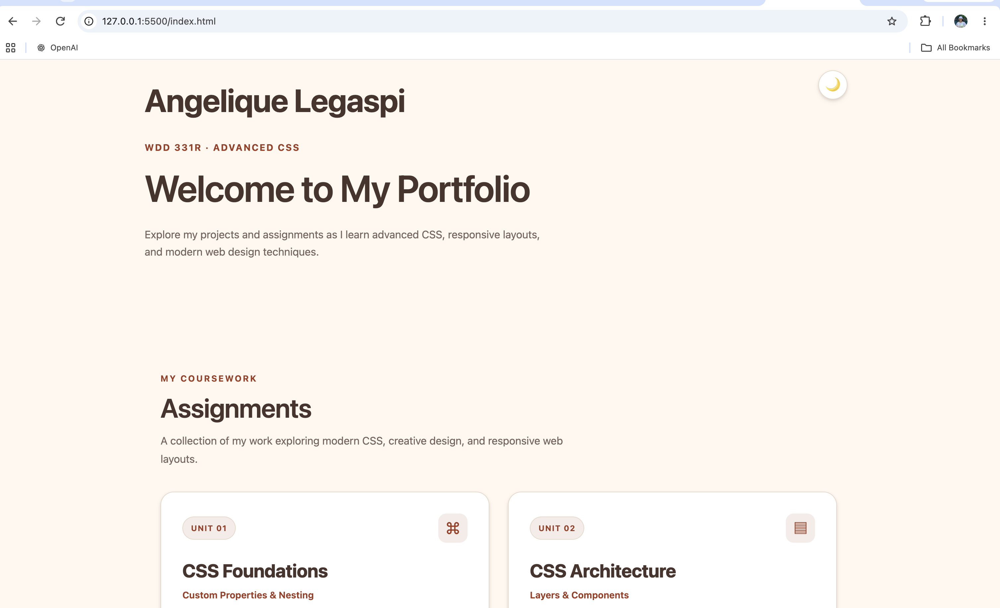

pow()
Creates larger sizes by raising the ratio to a power.
calc(1rem * pow(1.25, 2))Creating consistent, responsive typography with CSS.
A modular scale creates font sizes using a base size and a ratio instead of choosing random values.
Each step is calculated using the same ratio.
| Scale Step | Exponent | Font Size | Preview |
|---|
Changing one ratio updates the entire typography scale automatically.
Display Heading
Section Heading
Subsection Heading
Lead Paragraph
Body text at the base size.
Small supporting text.
:root {
--ratio: 1.25;
--base: 1rem;
--font-lg:
calc(var(--base) * pow(var(--ratio), 1));
--font-xl:
calc(var(--base) * pow(var(--ratio), 2));
}CSS math functions help calculate font sizes from the modular scale.
Creates larger sizes by raising the ratio to a power.
calc(1rem * pow(1.25, 2))Create sizes smaller than the base.
calc(1rem * pow(1.25, -1))Rounds a calculated value to a chosen interval.
round(31.25px, 1px)These values also respond to the ratio slider in Part 2.
Fluid typography allows font sizes to adjust smoothly as the available width changes.
:root {
--fluid-base:
clamp(1rem, 0.5rem + 2vw, 1.5rem);
--fluid-heading:
calc(var(--fluid-base) * pow(var(--ratio), 3));
}clamp() sets a minimum, preferred, and maximum size. The base can change with the viewport width.
Move the slider to resize the preview. Notice how the heading changes size.
This heading changes size as the preview width changes.
This interactive preview uses container-relative units so the text responds to the preview width.
A fluid base allows all computed scale steps to change together.
Each font size can have its own minimum and maximum for more control.
Typographic rhythm means using consistent line spacing and spacing between text blocks.
This paragraph has comfortable line spacing and a limited line length to make it easier to read.
The ch unit helps control line length, while lh connects spacing to line height.
.rhythm-example {
max-width: 65ch;
line-height: 1.6;
margin-block: 1lh;
}Registering --ratio as a number with @property allows the browser to interpolate it during transitions.
@property --ratio {
syntax: "<number>";
inherits: true;
initial-value: 1.25;
}
:root {
transition: --ratio 0.5s ease;
}I applied a modular scale and reusable typography tokens to my WDD 331R portfolio.
Font sizes were written directly in different CSS rules.

.hero h2 {
font-size: clamp(2.5rem, 5vw, 3.5rem);
}
.site-footer {
font-size: 0.8rem;
}The updated portfolio uses shared typography tokens and web fonts.
--font-size-display: var(--font-size-4xl);
--font-size-body: var(--font-size-md);
.hero h2 {
font-size: var(--font-size-display);
line-height: var(--line-height-display);
}
.site-footer {
font-size: var(--font-size-sm);
}A modular scale creates consistent font sizes from one base size and ratio.
CSS pow(), round(), and clamp() help create flexible typography systems.
Reusable tokens improve consistency and make CSS easier to maintain.